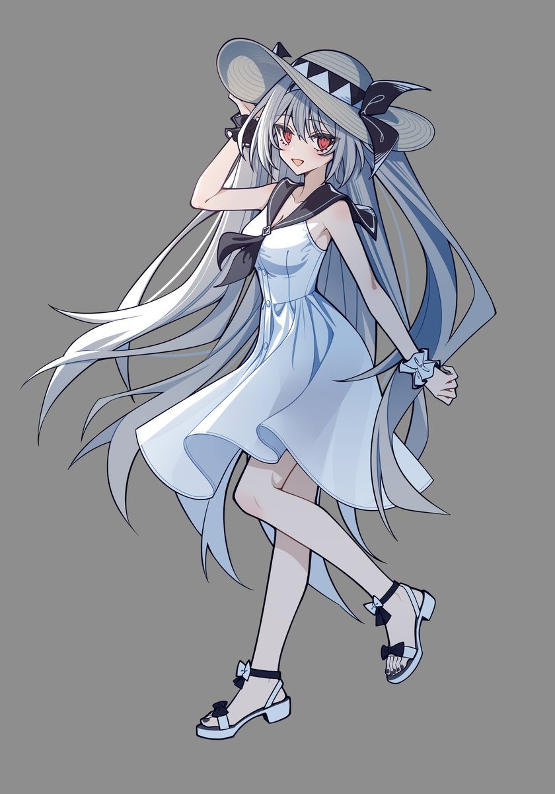

f hv
@fhv932189957574
RT @innocent69569: 夏末，海滩，白色连衣裙
这次画了经常出现在各种ACG作品的夏日印象中的情景。
最近一直没来得及画莉莉丝，回过神来发现夏天都已经几乎要结束了……
不过在作为夏天尽头的九月，发作为地表尽头的海边情景或许还挺应景的（笑）。
让大家久等了真的很抱歉…

纯真之人innocent
@innocent69569
夏末，海滩，白色连衣裙
这次画了经常出现在各种ACG作品的夏日印象中的情景。
最近一直没来得及画莉莉丝，回过神来发现夏天都已经几乎要结束了……
不过在作为夏天尽头的九月，发作为地表尽头的海边情景或许还挺应景的（笑）。
让大家久等了真的很抱歉~无论如何我之后还是会抽出时间画的莉莉丝的插图的 https://t.co/VA1po87IMj